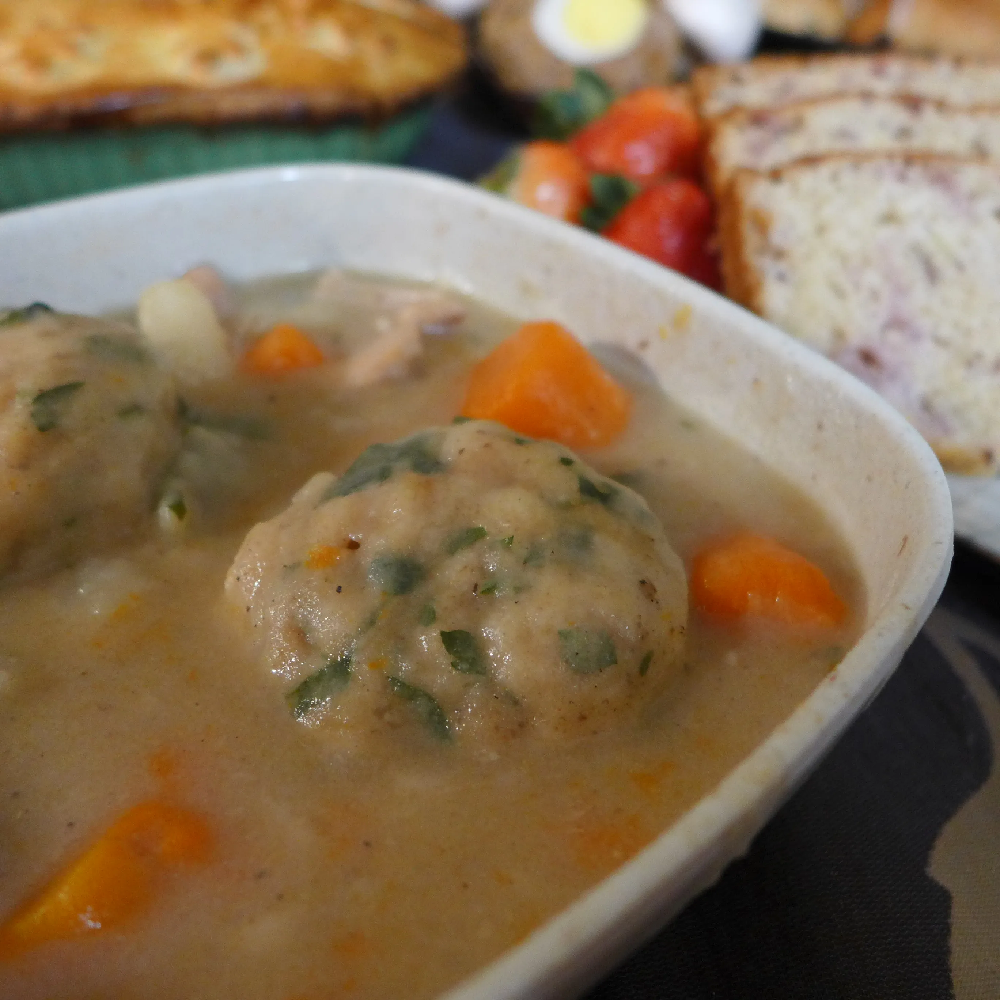

Stewed Hare with Root Vegetables and Herb Dumplings

Description
Until very recently, rabbits were a common source of protein.
Before refrigeration, their small size made one rabbit the perfect amount of meat for a single family's meal with no worry about waste or spoilage.
It wasn't uncommon for country families to keep chickens and rabbits as both pets and food. Their wild cousins were incredible pests,
and many a farmer who'd had his crops eaten away by the fluffy menace felt vindicated sitting down to a nice supper of stewed hare.
If you've never tried rabbit, it's a mild, easygoing meat that pairs perfectly with English herbs. If your large local grocery store stocks bison or goat,
odds are good they also occasionally stock rabbit. Some smaller grocers also stock a few frozen rabbits, usually in bottom drawers away from eye level.
Ingredients
Stew:
- 1 tbsp butter or lard
- 2 onions, diced
- 1 medium rabbit, skinned and quartered
- 2 bay leaves
- 1 tsp fresh ground black pepper
- 2 tsp coarse salt
- 1 tsp dried tarragon
- 1 tsp dried thyme
- ½ tsp dried basil
- 5 c /1 liter water
- 4 large carrots, peeled and cut into large chunks
- 4 medium potatoes, peeled and cut into large chunks
- 1 large turnip, peeled and cut into large chunks
Dumplings:
- 1 c /140 g all purpose flour
- ½ c /120 g cold butter
- ¼ c/ 20 g fresh parsley, chopped
- 2 tsp baking powder
- ½ tsp coarse salt
- ½ tsp black pepper
- cold water
Steps
- Start by peeling your carrots, potatoes, and turnip. Cut the root veggies into equal sized large chunks of around 2 inches / 5 cm.
- It's time to get out your trusty Dutch oven again. If you don't have a Dutch oven, use your heartiest stock pot.
- Melt 1 tbsp butter or lard over a medium-high heat. Once the fat is a liquid, carefully brown your rabbit quarters.
Use a pair of tongs to take them out of the pot and add the chopped onion in their place.
Cook the onion until it barely starts to brown, no more than 3-4 minutes. Add the salt, pepper, bay leaves, tarragon, thyme, and basil.
Mix them in with the onions and keep cooking for another minute.
- Add all the water. Give it all a good, hearty stir. Since you're not using broth, you really want the herbs mixed in well.
Now return your rabbit pieces to the pot and put a lid on it. Turn the heat down to medium-low. You want to get a nice simmer going.
Don't let it come to a heavy boil. Let the hare and herbs simmer for 1 ½ hours, stirring once every 15 minutes or so.
- After an hour and a half, add the carrots, potatoes, and turnips. Give it all another good, hearty stir and put the lid back on.
Let it keep cooking for another half hour.
- Meanwhile, prepare your dumplings. Historically, really decadent dumplings would be made with beef suet, which is a flavorful liver fat.
If you have a really good butcher, he can get you some, but few commercial grocers stock it. Instead, we're substituting the cheaper,
more commonly available, but still delicious fat of butter.
- Mix the flour, salt, pepper, parsley, and baking powder. Now cut the butter into small pieces and add it in.
Use your fingers to crumble the butter into the flour mix. Once you've made something akin to parsley flavored gravel, add water, 1 tsp at a time,
until you've got just enough to turn the gravel into a soft dough. Don't knead, squeeze, or overwork the dough. If you do, you'll get tough,
chewy dumplings instead of soft, fluffy ones. Rip the dough into 8 smaller pieces.
- Give your gently simmering stew one more hefty stir. Now carefully drop the 8 dumplings on top of the liquid. Don't fuss with it.
Just drop in a dumpling and move along. It doesn't need to be perfect. Get them into the pot as quickly as possible and slap a lid on it.
- Clamp the lid down tightly and leave it alone for 20 minutes. Do not raise the lid. If you let the steam escape, you'll ruin your dumplings.
- After 20 minutes, take the lid off and admire your handiwork. Use a slotted spoon to carefully lift the dumplings out of the broth.
Now, because you're a nice person, fish out the bones. If your broth is too thin, you can boil it uncovered for a few minutes to thicken it up.
- Serve each person one hearty scoop of rabbit and veggies with two dumplings. Pour a little extra broth on top to keep it nice and creamy.